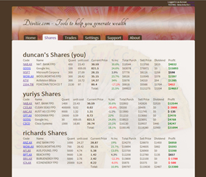
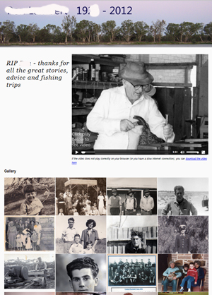
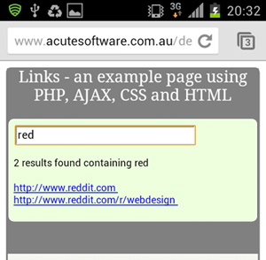
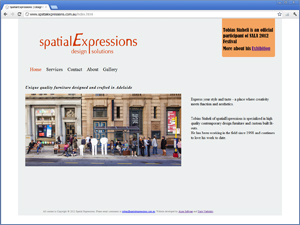
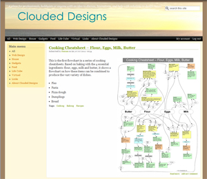

| Follow @AcuteDev |
|
| 2nd-Feb-2016 |
Virtual AI Simulator v0.0.7 Alpha released
https://github.com/acutesoftware/virtual-AI-simulator This is an alpha release to allow management of multiple runs of simulations |
| 2nd-Feb-2016 |
AIKIF v0.1.9 released
https://github.com/acutesoftware/AIKIF |
| 17th-Jun-2015 |
rawdata v0.0.9 released
https://github.com/acutesoftware/rawdata Package to generate random rawdata with optional Data Quality issues - useful for testing data automation procedures |
| 2nd-Dec-2014 |
Incorporated AIKIF webpages to main site
http://www.acutesoftware.com.au/aikif/index.html |
| 26th-Mar-2014 |
Review of Upper Ontologies.
http://www.acutesoftware.com.au/aikif/ontology.html Documentation of links for 18 current Upper Ontologies available. |
| 1st-Sep-2013 |
Started development of AIKIF - a framework to manage any type of PIM information, also readable by machines.
Artificial Intelligence Knowledge Information Framework |
| 8th-Mar-2013 |
Update to Spatial Expressions website.
http://www.spatialexpressions.com.au Features bolder interface, more content and product pages. |
| 19th-Feb-2013 |
Divitie.com is the Beta release of a share trading website The backend is built with PHP5, and automatically fetches updated stock prices.  |
| 28th-Dec-2012 |
Built a Tribute website (private access to family only) This feaures a simple image gallery, with HTML5 videos embedded.  |
| 12nd-Aug-2012 |
New website "Links" released. This is an example web application using PHP, AJAX, CSS and HTML to demonstrate methods to integrate these languages in a manageable way. It includes a code commentary with source code examples.  |
| 22nd-Jul-2012 |
New website built for Spatial Expressions:  |
| 15th-Jun-2012 |
Updated website with clean minimal interface. Let us know what you think |
| 28th-Feb-2012 |
Working on demonstration website using Drupal - www.cloudeddesigns.com  |
| 16th-Oct-2011 |
Custom development page added here |
| 11th-Aug-2011 |
Minor bugfix to registered version of Network Diary - popup message for 5 user license removed Network Diary has been released. |
| 15th-May-2011 |
After several minor revisions, version 4.6 of Timer and Timer-PRO have been released. Bug fixed which ignored countdown flag from a saved timer, and you can now change colours for each of the timer groups (alarms, stopwatches and counters). |
| 2nd-Jun-2010 | Added article Installing Network Diary onto Windows 2003 Server.pdf on installing the Network Diary on Windows 2003 Server. |
| 16th-Feb-2009 | Registered users can download version 6.5 of the Diary. This version has modifications to the Event Recorder to keep log of current sessions, and a Jump to Date menu to assist with entering historical data. |
| 5th-Mar-2008 | Minor website updates and some new articles on using the Diary. |
| 4th-Jul-2007 |
Version 4.0 of ASCON is released. This is a Network version which allows multiple users and integrates with the Network Diary.
|
| 9th-Jun-2007 |
Version 6.4 of the Diary and Network Diary is released. Deletion of MultiDay events and reminders are supported, and a minor bug fix in the Export to CSV (it would always export all data, despite date filters)
|
| 11th-May-2007 | Updated the Edit Timer utility for editing all aspects of timers - free to all Timer users. |
| 16th-Mar-2007 |
New version of File Lister 4.0 is released. You can now use UNC paths
( e.g. \\server\folder ) as part of any filelist without having to map network drives. |
| 10th-Mar-2007 |
New version of Shopping List Pro is available for registered users. Has new set of detailed shopping lists, and minor bug fixes to titles and when editing your own lists. |
| 23-Nov-2006 |
|
| 23-Nov-2006 | Registered users of TimerPRO can download a new utility for editing all aspects of timers, allowing complex sequences to be easily modified. |
| 9-Nov-2006 |
Version 4.4 of the Timer has been released. Minor bug fix when playing sounds with auto closing forms has been fixed. |
| 5-Sep-2006 |
Version 2.1 of Shopping List and
Shopping List PRO has been released. Better printing options and scrap paper included in the Free version, and the PRO version has many new features to allow editing of lists to pick from, and the columns which are displayed. |
| 24-Jul-2006 |
Version 3.2 of Autobackup-PRO is released. Has minor bug fix which remembers an INI setting (so you dont keep getting messages that a file is locked) |
| 23-Jul-2006 |
Version 6.3 of the Network Diary is released. Improved management of multiple users - easily switch users to modify / delete others events, visible indication when you are running as another user and a basic log file viewer in the Admin utility. Also a new Import feature to import data files from stand alone versions of the diary. |
| 22-Jul-2006 |
Version 4.3 of Timer-PRO has been released. Daily Alarms can now be automatically reloaded at anytime of the day. |
| 1-Jul-2006 |
New forums. The latest forums replace the older
software used with the PHPBB forum software. |
| 11-Jun-2006 |
Version 6.2 of the Diary is released. Minor bug fixes in InfoLink [reminder popup box
and program launch function], as well improved export to HTML.
Also has basic holidays for 2006 and 2007 (from the registered users page) |
| 24-May-2006 |
Version 3.1 of Dnote is available (registered customers only). Color Syntax highlighting can be
configured for any file type, plus bug fix to the file rename function. |
| 9-Feb-2006 |
Several more Articles added to the website. |
| 27-Nov-2005 |
Version 6.1 of the Network Diary is released. This fixes a problem with events not being visible in the calendar if entered at the end of the month when the user is in weekly view. |
| 10-Sep-2005 |
Version 6.0 of the Network Diary is released. This is a complete restructure which does not require a separate server program, resulting in easier installation and more features. |
| 14-Aug-2005 |
First public release of LifePIM is released. This is based on version 5.0 of the Diary and has a different focus to enable you to plan and record your entire life. |
| 22-Jul-2005 |
Versions 4.2 of the Timer and Timer-PRO have been released: - Wizard to create complex timer sequences (Pro version only) - Sounds can now be repeated until the user turns them off (Win2000/XP only) - more example scenarios can be created to see what sorts of things you can do with sequenced timers. (Pro version only) |
| 15-Jul-2005 | Version 5.0 of the Diary has been released. New customised filters to allow you to choose which appointments to show in any view, based on the categories and has new multiword search and multiline diary entries. Several other improvements made - thanks to all the beta testers for you your help. |
| 30-Jun-2005 | New product Resource Cards has been released. Resource Card Software allows you to easily find help for your clients. It has an easy to use form to enter all the details of various resources for Counsellors and a powerful search facility which allows you to quickly find support for your clients. |
| 2-Jun-2005 | Fix to 4.0 of the Timer has been uploaded. (minor problem with Beta timeout fixed). If you installed the software and it timed out immediately, simply download the latest version and install on top of your existing folder to fix the problem. |
| 4-Apr-2005 | New release 4.1 of TimerPRO is released. This is based on Acute Softwares Timer and has a number of powerful new features which enable you to sequence complex timed events. |
| 28-Feb-2005 |
Version 4.4 of the Network Diary Server and Client is released. This version includes security levels and the ability for certain users (secretaries and administrators) to add events directly into another persons diary. (Please note that Beta Testing for version 5.0 of the Network Diary will continue) |
| 15-Feb-2005 | We are now calling for Beta Testers for the new version of the Diary and the Network Diary. If you would like to participate, please email us. (All Beta testers get a FREE copy at the end of the test) |
| 13-Feb-2005 | Version 4.0 of Acute Softwares Timer is released. You can now save any timer/stopwatch or alarm as a favourite; pause and restart counters; automatically reload all previously running timers on startup, and each timer can play a different WAV file. |
| 22-Jan-2005 | Beta Testing for the new version of Acute Softwares Timer begins. If you havent already received your logon details, please email us. |
| 4-Jan-2005 | List of Public Holidays and Calendar notes for importing into the Diary and the Network Diary is available for registered users to download. |
| 12-Dec-2004 | FileLister version 3.3 is released. Powerful File searching, browsing abilities including the new Where's That File? interface. |
| 8-Nov-2004 | Network Diary Server version 4.2 is released. Includes a new simplified installation routine, configuration reporting tool, and fixes the 'Problem Copying File' error which can occur in some installations. |
| 6-Nov-2004 | Patch for the Network Diary Server is released to fix the 'Problem Copying File' error which can occur in some installations. If you are trying the evaluation version of the software and get this error, simply download this patch and extract all the files on top of your existing installation (normally C:\Program Files\acute\netDiaryServer ) |
| 6-Aug-2004 | Minor update to the Diary and the Network Diary Client. With version 4.3 you can export all data to CSV format (for Spreadsheet programs) as well as HTML. Also has a bug fix for display when starting in Week mode. |
| 3-Aug-2004 | PC User magazine features Autobackup-Pro on the front cover, and contains a step by step article on using it. "Never lose your data again" [page 105] |
| 24-Jul-2004 | Version 4.2 of Network Diary Client is released. Features an improved installation routine, enhanced search function, and minor bug fixes. |
| 5-Jul-2004 | The Diary is featured on the cover CD of the August edition of PC User magazine. Also has an article showing how to use it, and a special upgrade offer for magazine readers. |
| 4-Jul-2004 | Version 3.1 of Autobackup-Pro is released. Features an improved installation routine, better error handling for locked files and there is now an evaluation version available to download. |
| 15-Jun-2004 | The Timer is featured in the July edition of Net Guide magazine. Magazine buyers receive version 1.2 for free, with the option to upgrade to the full version. |
| 5-Jun-2004 | Version 4.2 of the Diary is released. Improved toolbar, enhanced search function (search PC and File usage). |
| 26-May-2004 | ASCON (Acute Software's Contacts Manager 3.1 is released. Has minor bug fixes and a simplified installation routine. |
| 25-May-2004 | Network Diary 4.2 is released to Beta testers. |
| 3-May-2004 | FileLister featured in the June edition of PC User magazine. Magazine buyers receive version 2.2 for free, with the option to upgrade to the full version. |
| 5-Mar-2004 | Acute Sotware now sells to over 22 countries world wide, with the sale of Autobackup-Pro to Croatia. |
| 19-Feb-2004 |
FileLister featured on the cover CD of several popular UK Magazines including Internet Advisor, PC Answers,and .NET magazines. "Using this powerful program you can instantly track down files of the same type - even if you cant remember what you called them." |
| 28-Jan-2004 |
Autobackup is reviewed in the Courier Mail newspaper (Queensland, Australia). "for a more stripped down and less hands-on approach, Autobackup is definitely the way to go. This very simple utility will do regular back-ups of any particular drive directory you specify." |